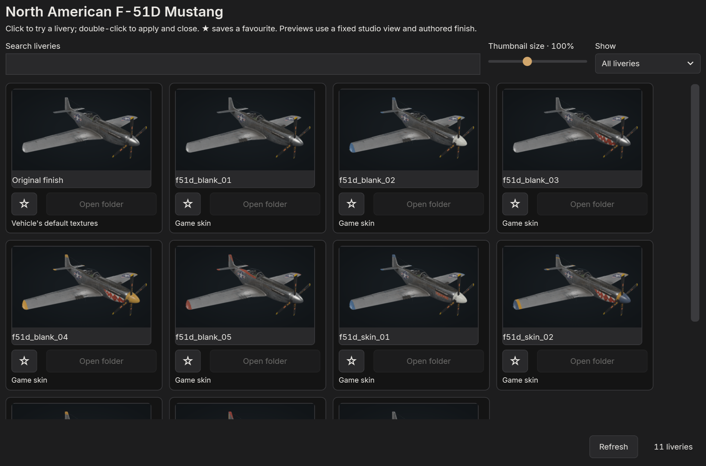
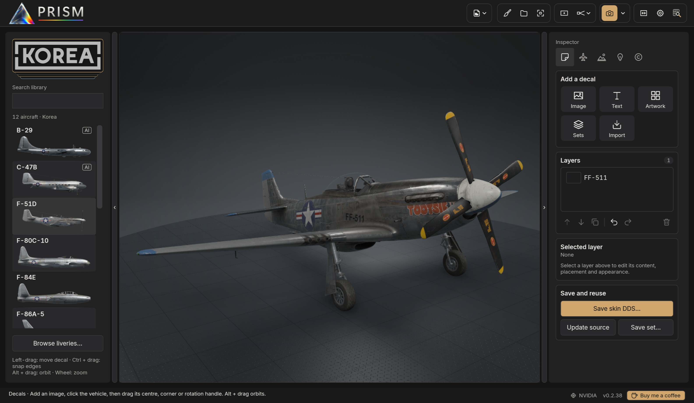
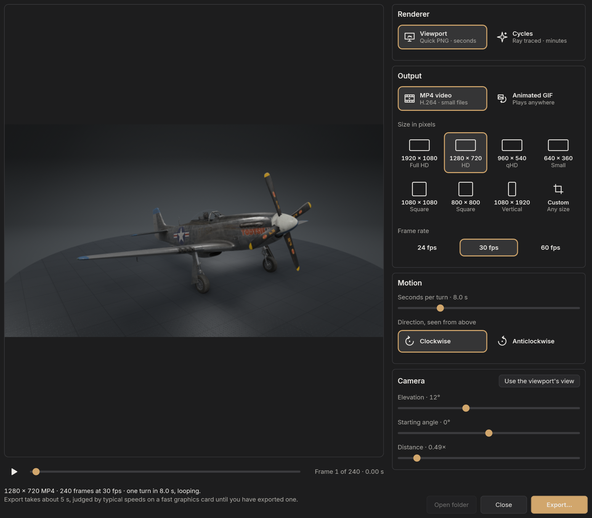
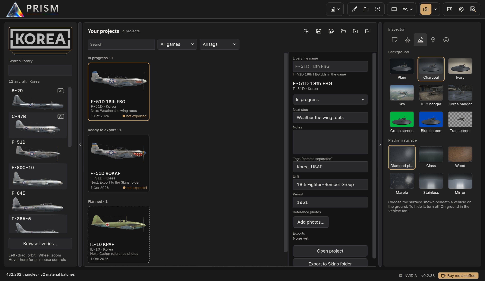

Getting started
PRISM is a skin viewer and painter for IL-2 Great Battles (including Tank Crew and Flying Circus) and IL-2 Korea. It reads the aircraft and vehicles straight from your installed games, shows them with your liveries in a studio, a hangar or the sky, lets you paint and decorate skins, and exports pictures, turntable animations and Blender Cycles renders.
PRISM only reads your game installation. It never changes game files, and it never uploads anything.
What you need
- Windows 10 or 11, 64-bit, with a graphics card that supports Direct3D 11.
- An installed copy of IL-2 Great Battles, IL-2 Korea, or both.
- The Microsoft .NET 9 Desktop Runtime (x64). The installer tells you if it is missing and opens Microsoft's download page.
- Blender (optional), only for Blender Cycles renders, Cycles turntables and showcase packs. PRISM can download it for you. Cycles renders on the graphics card: NVIDIA (OptiX or CUDA), AMD Radeon (HIP) or Intel Arc (oneAPI), with a current driver.
Installing PRISM
Run PRISM-v…-win-x64-setup.exe. PRISM installs for your Windows account only, into %LOCALAPPDATA%\Programs\PRISM, and needs no administrator rights. The installer adds PRISM and a link to this guide to the Start menu, and can add a desktop shortcut.
If the .NET 9 Desktop Runtime is missing, the installer says so at the end and offers to open Microsoft's download page. Install .NET Desktop Runtime 9 for x64, then start PRISM from the Start menu.
Testers can still use the zip: unpack it anywhere you can write to, and run PRISM.exe.
To uninstall, use Settings → Apps in Windows. Uninstalling removes PRISM's program files. It keeps your settings, sessions and caches in %LOCALAPPDATA%\PRISM, and any artwork you added to the art library.
The first start
PRISM looks for your games in their usual places (Steam, and the standard IL-2 folders). If it cannot find one, choose Settings → Game installation folder… and pick the game's folder.
The first time, PRISM opens in the light theme, and the welcome screen shows Light and Dark pictures: click one to choose. Later you can switch in Settings.
If PRISM cannot find Blender, it explains what Blender is used for and asks whether it is already installed:
- No, download it for me fetches the official portable Blender from blender.org, checks it, and unpacks it into PRISM's own folder. No installer and no administrator rights are needed.
- Yes, show PRISM where opens a folder picker; PRISM finds
blender.exeinside the folder you choose. - Don't ask again stops the question. You can still export Quick PNGs without Blender.
The tours
The first time PRISM starts, once the library has loaded, it offers a four-minute tour of PRISM, area by area: Take the tour or Not now. Either way it only asks once. The tour plays over PRISM itself, lighting up each part as it explains it and showing a few things happening, such as the camera turning and the propellers spinning; everything is put back when it ends.
Watch it again, or the more detailed Painter tour, from Settings; the Tour button in the Painter's header starts the Painter tour too. While a tour plays, Space pauses, the arrow keys move between chapters, and Esc stops. Drag or click the timeline to jump to any moment.
Updates
PRISM checks for a newer version shortly after it starts. When one is available you can Download and install, choose Later, or Skip this version. The download is checked against its published fingerprint before anything is replaced, and PRISM restarts on the new version. Settings → Check for updates now checks at any time, and Check for updates on startup turns the automatic check off.
Your projects, settings and sessions are kept across updates and reinstalls.
Quick start
Ten minutes from a fresh install to a finished picture and a first edit to a livery. Each step names the chapter that goes further.
Your first picture
- Choose a game. The logos at the top of the library choose the collection: IL-2 Korea, Great Battles aircraft, Tank Crew or Flying Circus. Hover them to see every choice.
- Choose a vehicle. Click one in the list, or type part of its name in the search box. It loads in its original livery, in the charcoal studio.
- Frame it. Left-drag to orbit, right-drag to pan and the wheel to zoom; double-click fits the vehicle to the view. Ctrl + drag turns the vehicle itself, for a banking or climbing pose.
- Pick a livery. Browse liveries… under the library shows every livery as a picture. Click one to try it, double-click to keep it.
- Set the scene. On the Scene tab, choose a background (a studio, a hangar, the sky or a transparent cutout) and, on the ground, the platform's surface.
- Light it. On the Lighting tab, click a lighting preset, then Auto vehicle exposure for a balanced exposure.
- Export. Turn on Frame in the header to see exactly what will be saved, then choose Export → Quick PNG · 4K. PRISM asks where to save, and the picture is ready in a few seconds.
For a ray-traced render instead, choose Blender Cycles · 4K in the same menu; PRISM offers to download Blender the first time (see Exporting).
Your first edit
- Open the Painter with the brush button in the header. The skin's flat texture sheet appears beside the 3D vehicle.
- Click the vehicle where you want to paint: a ring pulses at that spot on the sheet.
- Paint. Choose the brush (B), pick a colour, and paint on the sheet; the 3D vehicle follows every stroke. Your paint goes into a layer above the original skin, which never changes.
- Add a marking. Back in the viewport, the Decals tab's Text button opens a text editor: type a number or a name, then click the vehicle where it should go and drag it into place.
- Save the project (Ctrl + S) to keep everything editable, then Export to game in the Painter to write the finished skin straight into the game's Skins folder.
Where next
- The tours. Settings → Take the tour plays a four-minute tour over PRISM itself, and Painter tour covers the Painter in depth.
- Projects. The Project button shows every livery you are working on as a card (see Projects and sessions).
- Shortcuts. Every mouse and keyboard control is listed in Keyboard and mouse.
The PRISM window

- Library (left): the aircraft and vehicles of the chosen game.
- Header (top), from left to right: Skin options; Painter, Project and Fit; Frame and Lens; Export with its menu; Focus, which hides both side panels for the largest view; Settings; and the Skin inspector. Hover any button for its name.
- Viewport (centre): the vehicle, live, as it will export. Until you choose one, it shows a grid of vehicles from all four collections, drawn afresh each time PRISM starts.
- Inspector (right): the Scene, Lighting, Vehicle, Decals and Watermarks tabs.
- Status strip (bottom): what PRISM is doing, the graphics card PRISM draws on (NVIDIA, AMD or Intel; hover it for the card, its memory and the card the last Blender render used), and the version.
The arrows at the edges of the library and inspector hide or show them; drag their inner edge to resize them. PRISM remembers their widths, and Focus in the header hides both at once.
Under the library, a short line reminds you of the mouse controls for what you are doing (orbiting, placing decals); hover it to see all of them.
The library
The game logos at the top choose a collection: IL-2 Korea, Great Battles aircraft, Tank Crew ground vehicles or Flying Circus aircraft. Each vehicle is shown by name with a side-view picture. Type in the search box to filter; the search also knows full names, such as Mustang or Thunderbolt.
Aircraft marked AI are not flyable in the game (for example the Korea B-29 or the Great Battles B-26). You can view, paint and render them like any other, but the game may not show custom skins on them.
Click a vehicle to load it. The library remembers your game and reloads quickly; it checks the installation for changes in the background.
Moving around
| Orbit and tilt | Left-drag |
| Pan | Right-drag, middle-drag or Shift+drag |
| Zoom | Mouse wheel, towards the pointer |
| Fit the vehicle | Double-click, or Fit |
| Turn the vehicle itself | Ctrl+left-drag (yaw and pitch) |
| Roll the vehicle | Ctrl+wheel, 5° a notch |
| Reset the view | Ctrl+R: the default three-quarter view, fitted |
Turning the vehicle with Ctrl turns it about its centre without moving the camera, and exports keep that pose. It is the way to show an aircraft banking into a turn or climbing away: pose the vehicle with Ctrl, then orbit the camera around it as usual. The lights stay where they are unless a light is set to Rotate with vehicle (see Lighting).
On the Decals tab a left-drag moves decals instead, so hold Alt to orbit there.
Export frame and lens
Frame in the header shows the 16:9 area that Quick PNG and Blender export; the area outside it is dimmed. Adjust frame lets you drag the frame or resize it from a corner, and Reset restores the largest centred frame. With Frame off, exports take the whole viewport at its own shape.

The Lens button beside Frame chooses the lens: Wide (60°), Normal (43°, the usual view), Telephoto (15°) or Orthographic, a flat side-on look like the library pictures. The camera stands back as the lens narrows, so the vehicle keeps its size. Blender renders use the same lens, and projects remember it.
Which lens to use:
| Wide | Dramatic close-ups, with the nose looming large; also shows more of a hangar or sky around the vehicle. |
| Normal | The everyday view, close to how the eye sees. |
| Telephoto | Flattens the perspective as a long lens does; flattering for side and three-quarter views, and the usual choice for presentation pictures. |
| Orthographic | No perspective at all, for side, top and front profiles that line up with plans and reference drawings. |
To come back to a camera view later, save it in the Showcase window (see Exporting).
Settings

Settings holds:
- Game installation folder…, when PRISM did not find a game by itself.
- Switch light / dark theme (PRISM starts light the first time) and the Interface font: Inter, or Windows' own Segoe UI Variable.
- Check for updates now, and Check for updates on startup.
- User guide, which opens this guide on PRISM's website, and Report a problem… (see Troubleshooting).
- Take the tour and Painter tour.
- Check DDS alpha on load (see Liveries) and Open images after export, which opens each finished picture in your usual image viewer.
Liveries
PRISM lists every livery it can find for the loaded vehicle: the game's own packed skins, and loose skins (DDS or PNG) in the game's skins folder. The Skin options menu at the left of the header gathers everything to do with the livery: Browse liveries…, Import skin…, Inspect skin…, Restore original, Official livery templates… (for Korea aircraft), Live DDS, Surface finish and the Advanced texture target.
The livery browser

Choose Browse liveries… under the library, or in Skin options. The browser shows a picture of every livery for the vehicle on screen.
- Click a picture to try the livery while the browser stays open; double-click to apply it and close the browser.
- Type in Search liveries to filter by name, and use Show for All liveries, Favourites or Recently used. The star under a picture makes it a favourite.
- Thumbnail size makes the pictures larger or smaller; the browser remembers its size and place on screen.
- Open folder opens the folder of a loose skin (packed game skins have none). Refresh looks for new skins and redraws pictures of DDS files that changed.
The pictures use a fixed camera, studio light and each livery's own finish, so liveries compare fairly. They are drawn on your PC the first time and kept in a cache, so the browser opens quickly afterwards.
Your own skins
Drop a DDS or PNG onto the window, or choose Skin options → Import skin…, to apply it to the vehicle on screen. PRISM keeps the texture's full resolution. Restore original goes back to the vehicle's own textures.
Liveries made of more than one sheet load whole: a Great Battles livery's second sheet (X#1 beside X, such as the C-47A's wings) and Korea's numbered sheets (X#N#2). Pick the first sheet and PRISM finds the rest.
Advanced texture target chooses which of the vehicle's surfaces a custom texture replaces, for vehicles whose paint is spread over several materials. Most liveries never need it.
Live DDS
Live DDS (in Skin options) watches the loaded skin file while you work on it in Photoshop, GIMP, Affinity or another editor: save to the same file and PRISM refreshes within a second or so, keeping your camera, scene and lights. A typical loop:
- Import the DDS you are editing, and turn on Live DDS.
- Frame the part you are working on; Ctrl + drag poses the vehicle to show it.
- Edit and save in your image editor, and look at the result in PRISM. Export a Quick PNG whenever you want to share a progress picture.
PRISM never writes to the file it watches. Editable decals pause live updates, since they are baked onto the skin; the choice is remembered.
Working from the official templates
The makers of IL-2 Korea publish Photoshop templates for the eight flyable aircraft: Skin options → Official livery templates… (shown for Korea aircraft) opens the page to download them. Each is a large layered PSD, 4096 × 4096, with its parts in groups:
- Base color: the livery's colour, with groups for base materials, markings, art (dirt, joints, scratches) and shadows.
- MRR (named after the aircraft in some templates, such as
MIG15BIS-MRR#1): the finish map, hidden at first. Its three groups are the metallic (red), roughness (green) and reflectivity (blue) channels; some templates call them R, G and B, others metalness, roughness and specular level. - UV: the outline of the sheet's islands, as a guide.
PRISM reads the DDS files you export from the template, not the PSD itself, and Live DDS shows each export on the aircraft as soon as it is saved:
- In Photoshop, with only Base color showing, export the sheet as a DDS into the game's skins folder for the aircraft,
data\graphics\skins\<aircraft>(for exampledata\graphics\skins\MIG15BIS\My livery.dds). Saving DDS from Photoshop needs a plug-in such as Intel Texture Works or NVIDIA Texture Tools Exporter; save at full size with mipmaps (PRISM's own exports use BC3, also called DXT5). - Show only the MRR group and export it beside the first file with
_MRRadded to the name:My livery_MRR.dds. This pairing is how both PRISM and the game find a livery's finish. - In PRISM, load the colour DDS with Import skin… and turn on Live DDS.
- Work in the template. After each change, export whichever of the two files it touched: PRISM reloads the colour sheet or the finish within a second or so, keeping your view, and the files are already where the game looks for them.
Check the finish with Skin options → MRR view, which shows each channel in greyscale on the aircraft. Save a project in PRISM if you want to keep the scene, lighting and pose for your pictures.
Surface finish
A livery's finish (how shiny or matt each part is) comes from the texture's alpha channel in Great Battles and from a separate MRR map (metallic, roughness, reflectivity) in Korea. A skin saved without its alpha, or with it flattened, looks chalky white or wet and glossy all over. Skin options → Surface finish repairs or replaces it:
- Automatic repair restores missing Great Battles alpha from the original aircraft.
- Livery's authored finish uses exactly what the file holds.
- Original vehicle finish borrows the stock livery's finish.
- Matte fabric / paint makes everything matt.
- MRR view · Metallic, Roughness and Reflectivity (Korea) show one channel in greyscale on the vehicle, for checking. These views never change files or exports.
Save repaired DDS… writes the repair to a DDS, backing up any file it replaces; Save repaired PNG copy… saves a copy for use in PRISM without touching the source.
When Check DDS alpha on load is on (Settings), loading a loose Great Battles skin with broken alpha offers Back up and repair, or Keep unchanged.
The skin inspector
The magnifier at the right of the header opens the Skin inspector: the flat texture beside the vehicle. Choose Colour, Alpha / finish, Normal map or Korea MRR. Click a panel on the vehicle to find it on the texture: a ring pulses at that spot. It is the quickest way to find where a rivet line or a panel lies on the sheet before you paint it. The inspector never changes files or exports.
Scene

The Scene tab chooses where the vehicle stands and what surrounds it. Every choice shows as a picture tile; hover one for its name.
Backgrounds
- Charcoal and Ivory studios: seamless curved backdrops, darkening gently towards the corners. Charcoal suits bright and natural-metal liveries; Ivory suits dark and camouflaged ones.
- Plain: a flat background colour.
- IL-2 hangar (needs Great Battles) and Korea hangar (needs IL-2 Korea): the games' own hangars, with their lamps. The vehicle stands on the hangar floor, and the hangar's lighting replaces the studio lamps. Floor and wall brightness lightens or darkens the hangar alone, without changing the light on the vehicle.
- Sky: the vehicle in flight, lit by the sun and sky (see below).
- Transparent: a real transparent background, shown on a checkerboard, for pictures you will place on a web page or in an image editor. Include ground shadow keeps the vehicle's shadow on an invisible floor.
- Green screen and Blue screen: flat key colours for compositing in video editors.
The platform
On the ground in a studio, the vehicle stands on a round platform sized to it, the same platform turntables use, with its shadow and reflection beneath. Platform surface chooses diamond plate, glass, wood, black marble, stainless steel or mirror. Glass, stainless steel and mirror reflect the vehicle's underside, which suits silver and polished liveries.
The platform shows only on the ground, and not in the hangars (which have their own floor) or with a transparent background. On ground switches between standing and flying; Gear down extends the landing gear in flight too. Ground vehicles always stand on the ground, so for them On ground stays on and the Sky background is not offered.
Sky
With Sky, the sun, sky and clouds light the vehicle together and the studio lights are paused. Choose the source at the top: a simulated sky whose clouds you shape, or a photo sky, a photographed sky that lights the vehicle with its real sun and clouds.
Simulated sky
- Presets: Clear blue, Daylight (with scattered cloud), Sunrise, Sunset and Overcast. A preset is a starting point: it sets the sliders below, which take it from there.
- Sun elevation and Sun direction: a low sun gives warm light and long shadows; negative elevations put it below the horizon, for dusk. The scene stays fixed while you orbit the camera.
- Haze: more haze whitens the sky near the horizon and fades distant ground and cloud into it.
- Cloud type: Cumulus (scattered and puffy), Stratus (layered) or Cirrus (thin ice streaks), with coverage (zero for a clear sky), density (thin and translucent to dense with dark bases), layer thickness, layer height (negative puts the clouds below the vehicle, positive overhead, near zero flies through them), cloud size and clear space around vehicle, which pushes nearby clouds away while keeping the distant layer. New cloud arrangement reshuffles them.
- Ground detail: Countryside below vehicle adds farmland, woodland, rivers, villages and roads, with height above ground, landscape scale and Hills; Mountains raises real ranges with rock and snow on the horizon.
The viewport previews the same sky and cloud shapes that Blender renders with Cycles; thick or dense cloud layers take longer to render.
Photo skies
Photo skies are equirectangular HDRIs (.hdr or .exr) from your Photo skies folder and those shipped with PRISM. Sky brightness matches the photograph to daylight, darker for a gloomy overcast or brighter for a dull evening, and Sun direction turns the photograph and its sun around the vehicle.
Poly Haven… browses the free skies on polyhaven.com and downloads the size you choose into your Photo skies, checked. To add your own, Open Photo skies folder, copy the files in and press Refresh.
The viewport shows a preview of the photograph and lights the vehicle with the sun and skylight measured from it; Blender renders the full photograph. A photographed sky has no clouds below the vehicle, and its sun keeps the height it was photographed at.
Lighting

The Lighting tab sets the studio lights and the picture's tone. In the Sky scene the sun and sky light the vehicle instead, and in the game hangars their own lamps do; the studio light controls are greyed out there.
Presets
Lighting presets set up the four studio lights in one click, each shown as a small diagram of the lights around the vehicle seen from above:
| Soft studio | A broad key, gentle fill and soft rim; a balanced starting point for painted vehicles. |
| Shape & detail | A side key and restrained fill bring out panel contours and surface detail. |
| Polished metal | Large softboxes lay broad reflections across bare aluminium, with a rear highlight. |
| Rim highlights | A stronger rear rim outlines wings and canopy against darker backgrounds. |
| Dramatic | A focused side key, little fill and a controlled rim, for deep shadows. |
| Sunshine | Only the sun, with a soft sky fill lifting the shadows; set the sun's direction, elevation and temperature (its colour: about 5,600 K is midday, lower is the warm light of sunrise and sunset). |
The lights stay where they are while you orbit the camera, so a view from behind can be lit from the wrong side. Reapply to current view puts the preset's lights back where they belong for the angle you are looking from.
On the ground, Light rotation turns all four lights around the vehicle together, and Light intensity brightens or dims them together, keeping their balance. Daylight mixes ambient daylight with the studio lights.
Individual lights
Open Adjust individual lights to fine-tune the four lights: Key shapes the vehicle, Fill softens its shadows, Rim outlines it and Accent adds highlights. For each:
- Light enabled switches it off and on.
- Softbox (a broad, soft light) or Spotlight (a focused beam with harder shadows).
- Brightness, and the softbox size (larger panels give broader highlights and softer shadow edges) or the spotlight's beam width.
- Rotate with vehicle: off, the light stays put in the studio; on, it follows the vehicle's pose when you turn it with Ctrl, keeping a banking aircraft lit the same way.
- Advanced aiming moves the beam's target across or along the vehicle.
Tone
- Vehicle exposure brightens or darkens the vehicle only.
- Ambient / background exposure brightens or darkens the studio, floor, hangar and other surroundings.
- Contrast sets the spread between dark and light.
Click a slider before using the mouse wheel on it, so scrolling the panel never changes a value by accident. The wheel and arrow keys move exposure by 0.05 EV and contrast by 0.01.
Auto vehicle exposure measures the vehicle alone and sets vehicle exposure and contrast for a consistent look: its midtones at about 45% grey, whatever the vehicle or light. Highlights are kept below white, measured by each pixel's brightest colour, so saturated paint doesn't clip; the smallest reflections, such as a glint on glass or bare metal, may clip rather than darken the whole vehicle. When the vehicle's tones are bunched, it adds contrast (up to 1.30) so its shape reads. Use it again after changing the camera, the livery or the lighting.
Effects
- Ambient occlusion darkens creases, wheel wells, running gear and the floor beneath the vehicle, where nearby surfaces block the light, as a Cycles render does.
- Screen-space reflections let polished metal and gloss paint reflect the vehicle's own parts and the floor where they are in view.
- Supersampling draws the viewport at twice its width and height and averages it down, smoothing stepped edges and shimmering patterns such as the wooden deck's planks, at about four times the work.
Quick PNG and viewport turntables use ambient occlusion and reflections as the viewport shows them, and are always supersampled. Blender computes all three itself.
Lighting recipes
- A natural-metal aircraft: Polished metal on the Charcoal studio with the Mirror or Stainless platform, then Auto vehicle exposure.
- Camouflage and panel detail: Shape & detail on Ivory, with ambient occlusion on.
- A poster shot: Dramatic or Rim highlights on Charcoal, a Telephoto lens and a low camera.
- Out in the sun: Sunshine with a low elevation and a warm temperature for late-afternoon light, or the Sky scene for clouds around the vehicle.
The Vehicle tab

The Vehicle tab sets up the loaded aircraft or tank. Options the vehicle does not have are hidden or greyed out; hover a greyed-out one to see why. All of these are remembered, saved in projects, and used by every export.
The top of the tab sums up the vehicle's state (gear, flaps), and Vehicle Data opens the game's description, history and diagrams for the vehicle, where the game provides them.
Stance
- On ground stands the vehicle on the platform or flies it, and Gear down extends the landing gear in flight too. Fixed-gear aircraft always keep theirs.
Canopy and crew
- Canopy open opens the pilot's and gunners' canopies; Bomb bay doors open on the bombers that have them; Open crew hatches on tanks, and Side doors open on the CG-4A glider.
- Pilot and Gunners show the game's seated crew in their own seats and turrets; the B-29 and C-47B show their crew inside the fuselage as gunners.
- Winter gear dresses them in winter flying kit instead of summer, where the game ships both.
Loadout and flaps
- Loadout: the game's own weapon and fuel-tank configurations, as the game lists them. On the He 111, a loadout with external racks hides the internal bomb bay doors; choose Clean or an internal-bay loadout to open them.
- Flaps: from retracted to fully extended, for aircraft with animated flaps, with the gear up or down.
Lights and effects
- Nav lights and Landing lights, where the model has them.
- Spinning props spins the propellers. Speed is the propeller shaft's speed in RPM (zero pauses them) and Shutter is the camera's shutter: a slow shutter such as 1/60 s gives long blurred blade trails, as in a photograph, and a fast one freezes the blades.
- Muzzle flashes poses the fixed guns firing, as a camera catches a burst: about half the guns mid-flash, and a tracer line ahead of every gun in its nation's colour (red for American and Soviet aircraft, yellow-orange for German and Italian, red-orange for British and French). Gun smoke picks how the smoke at the muzzles is drawn: Volume (the default) is sunlit smoke with depth, which looks right from every side but takes longer in Blender; Puffs are flat soft puffs turned to the camera, quicker to render.
- Exhaust flames, on piston aircraft whose models carry the game's exhaust flames (most Great Battles fighters and bombers): while the propellers spin, each exhaust stub flames at its moment in the engine's firing order, timed from the propeller speed. The shutter decides what a picture catches: at a fast shutter a few stubs mid-flame, at a slower one more of them glowing. Turntable videos follow the engine frame by frame.
- On jets the same switch is Exhaust glow: a warm glow inside the jet pipe, with its own Glow strength.
Every effect reaches Quick PNG, turntables and Blender renders as the viewport shows it.
Action shots
For an aircraft in action: choose the Sky background, turn off On ground, turn on Spinning props with a slow shutter, add Muzzle flashes, then pose the aircraft with Ctrl + drag and Ctrl + wheel so it banks into the turn.
Decals and watermarks
Decals sit on the vehicle, painted onto its skin: squadron markings, numbers, names and nose art. Watermarks sit on the picture: your signature, the vehicle's name, a logo.
Decals

Adding a decal
The Add a decal tiles at the top of the Decals tab:
- Image: a PNG, JPEG, BMP or TIFF file of your own. Transparent PNGs work best.
- Text: opens a text editor. Type the text, then choose fonts, sizes, bold, italic, underline and colours letter by letter if you like; Word wrap breaks long text into lines of the width you set.
- Artwork: an image from PRISM's artwork library.
- Sets: a saved set of decals from PRISM's decal library (
Resources\Decals), placed together as you saved them. - Import: a
.decalsset file someone shared with you. - Markings: national insignia of the period, drawn by PRISM to their official proportions in the colours IL-2 itself uses: US stars and star and bars (1919 to Korea), RAF roundels A to C.1 and fin flashes, Luftwaffe Balkenkreuze and outline crosses, and Soviet red stars. Your aircraft's nation is listed first. Pick a marking and one of its standard sizes (for example a 36 in C.1 for a fighter's fuselage), then click the vehicle: it is placed at its real size. A fin flash linked to the opposite side is mirrored, so red still leads.
Then click the vehicle where the decal should go. It lands on the painted surface under the pointer, flat against it and sized to suit. To reach the underside, orbit with Alt + drag first.
Moving and shaping
On the Decals tab the mouse works on decals:
| Select | Click a decal on the vehicle, or its layer in the list |
| Move | Drag its centre |
| Resize | Drag its corner handle |
| Rotate | Drag its round handle |
| Snap to other decals | Hold Ctrl while placing or moving |
| Orbit | Alt + left-drag |
| Pan and zoom | Right-drag, middle-drag or Shift + drag; the wheel |
For exact values, open Placement: width and height in metres (with Keep aspect ratio), rotation in degrees (Reset rotation sets it to 0), Move to another surface for a decal that belongs on another part of the vehicle, and Lock placement, which stops the decal moving by accident.
A warning under the layer's name means a decal reaches too far round a curve, such as the top of a fuselage: make it smaller, or place it again from a view that faces that surface.
Layers
Each decal is a layer. The list shows them top first; Hidden and Locked mark the ones you have hidden or locked. Below the list: Move up, Move down, Duplicate, Undo, Redo and Delete.
Select several layers with Ctrl + click or Shift + click to move, resize or rotate them as a group, keeping their layout.
Under Selected layer: its Name, Replace image (or Edit text for text), which keeps the placement and size, and Link opposite side.
Markings on both sides
Most markings appear on both sides of a vehicle. Place the decal once, then Link opposite side: PRISM puts a matching decal at the mirrored spot, reading the right way round, not flipped. Edits to either side change both; Unlink to edit them separately. Where both sides share one area of the skin, they cannot carry different markings.
Appearance and wear
- Visible and Opacity.
- Blend: Normal (the decal's own colour), Multiply (darkens; white disappears, good for dirt and shading), Screen (lightens; black disappears), Soft Light (blends in subtly), Overlay (adds contrast) or Colour (the decal's colour with the skin's light and shade).
- Decal finish: Skin keeps the finish beneath, Painted is matt paint, Glossy a shiny lacquer, Metallic a metal (on surfaces that support it).
- Outline: an outline round the decal, in a colour and thickness of your choice, as on many national markings.
- Weathering: Faded, Scuffed or Chipped paint, with an Amount, so the skin shows through.
- Gaussian blur softens the whole decal, for a sprayed edge.
None of these change the decal's image; change them back at any time.
Saving decals
- Save project keeps every decal editable (see Projects and sessions).
- Save skin DDS… bakes the decals into the skin and saves it as a DDS for the game; a livery of several sheets asks for a folder and saves each sheet. Existing files are backed up.
- Update source writes the decals back into the loose DDS skin you loaded.
- Save set… saves the selected decals, or all of them, as a set you can place on other liveries or share.
Quick PNG and Blender exports show decals as the viewport does, and Batch liveries can apply them to every livery it renders.
Watermarks

The Watermarks tab adds overlays that sit on the picture, not on the vehicle. They appear in every export, inside the export frame, without their editing handles.
- Vehicle name: the vehicle's official name, or your own text (remembered for each vehicle), with a font, transparency, an emboss for raised lettering, and an optional dark backing.
- Watermark: your name, group or copyright notice. Edit custom text sets fonts, styles and colours letter by letter. Drag its right or bottom edge to reflow the text, or its corner to resize it.
- Artwork: logos and images. Add images copies PNG, JPEG, BMP or TIFF files into PRISM's art library; Add badge places the vehicle's official badge from your installed game. Click artwork to place it, then set its Transparency, bring it To front, Remove it, or Clear placed art (the files stay in the library).
Drag an overlay to move it, and its corner to resize it; the Position grid snaps it to a corner, an edge or the centre of the picture.
Painter
Choose Painter in the header to paint the loaded livery. The flat texture sheet sits beside the live 3D vehicle, which follows every stroke. Painting never changes the original skin: your paint lives in layers above it, as in an image editor. New to the Painter? The Tour button in its header plays a tour of it.

The sheet
2D, Split and 3D show the sheet alone, the sheet and the 3D view side by side, or the 3D view alone; drag the divider between them to share the space. Choose the sheet to paint from the list above it (most aircraft have one; some have two or more), and use Fit, 100% and Rotate to move around it.
| Zoom | Mouse wheel, towards the pointer |
| Pan | Right-drag, middle-drag, or hold Space and drag |
| Fit the sheet | Fit |
The UV overlay draws the outlines of the sheet's islands, in a colour you choose, so you can see how the sheet wraps the vehicle. It is only a guide and never enters your paint.
The 3D view
The 3D view works like the main viewport: orbit, pan, zoom and pose it the same way. Click the vehicle to find that spot on the sheet: a ring pulses there, and PRISM switches to the right sheet.
In its corner, Light from camera lights whichever side you turn to the camera, the underside too, and Brightness lifts or dims this view alone (double-click it to reset); neither changes your scene's lights or exposure.
Beside it, a column of pictures shows the vehicle from the front, both sides, the rear, the top, the bottom and both front quarters from above, in the livery you are painting. Click one to reset the 3D view to that pose, then adjust it as you like, Ctrl + drag and Ctrl + wheel included. The Painter starts with the vehicle level; the flight pose of your studio picture is kept and comes back when you leave the Painter.
Tools
The tool rail down the left holds groups of tools; hover a group with a corner mark to open its flyout.

| Tool | Key | |
|---|---|---|
| Brush | B | Size, hardness, opacity, flow, spacing |
| Airbrush | A | Keeps building while held still |
| Eraser | E | Removes paint from the layer |
| Rectangle, Ellipse, Polygon | M, O, L | Selections: new, add, subtract, feather |
| Path | P | Editable outlines, which can snap to UV lines |
| Bucket | G | Fills connected colour, or a pattern |
| Replace colour | R | Swaps a colour everywhere, keeping its shading |
| Eyedropper | I | Picks a colour |
The context bar across the top shows only the active tool's settings, where they stay in view: for the brush its size, hardness, opacity (the most a single stroke covers), flow and spacing. [ and ] change the brush size.
Mirror left / right paints the matching spot on the vehicle's other side as you paint, wherever it lies on the sheet: one stroke gives both sides their stripe.
Colours
The foreground and background colours sit at the foot of the rail; X swaps them. Pick a colour from the colour flyout or type its hex value, or take one from the sheet with the Eyedropper. Save colour keeps it in your palette, and Recent colours remembers the last ones you used.
Selections
Rectangle, Ellipse and Polygon draw selections: while one is active, painting and fills stay inside it. Choose New selection, Add to selection or Subtract from selection in the context bar, and Feather for a soft edge. Invert selection swaps inside and outside; Fill selection fills it with the colour or a pattern (with no selection, the whole sheet). Esc cancels a selection or shape you are still drawing.
Paths
Path draws smooth outlines point by point. Snap path point to nearest UV line pulls points onto the sheet's panel and island edges, within the Snap reach. Then Stroke path traces it with the brush, for clean lines and stripes, or Path → selection turns it into a selection to fill or paint inside. Select a point and press Delete to remove it.
For painting a panel, draw its outline with Path first, then Path → selection and fill it or paint inside it: panel lines on the sheet are not always closed.
Fills and patterns
Bucket fills an area of similar colour; Tolerance sets how similar. Fill with chooses a flat colour or a pattern: squares, stripes, chevrons, dots or a grid, in the foreground colour over the background, with a Pattern size, an angle, and an offset to line it up with a panel or marking.
Replace colour swaps one colour for another everywhere on the sheet, or only inside a selection. Keep shading keeps the panel lines, weathering and shading beneath; off, it replaces the colour flat.
Layers
The Layers panel on the right works like Photoshop's or Affinity's: an eye to show or hide each layer, locks, opacity, Normal or Multiply blending, and a mask (black hides, white shows). New layer adds one above the selected layer; double-click a name to rename it; drag a layer to reorder it.
Keep separate things on separate layers (a base colour, stripes, numbers, dirt), so each can be changed, hidden or toned down later. A Multiply layer painted in greys darkens what lies beneath, which suits panel shading and grime.
Ctrl + Z and Ctrl + Y undo and redo every step, and the history buttons in the Painter's header do the same.
Finish layers

New finish layer adds a layer that paints finish instead of colour: how matt, glossy or metallic the skin is. Paint it with the usual tools; the colour you choose is ignored. Pick its finish in the Finish tiles: Matt, Satin, Gloss, Bare metal, Original (back to the skin's own), or Custom for exact values (a gloss level for Great Battles; metallic, roughness and reflectivity for Korea). Changing the finish later re-finishes everything the layer covers, with no repainting. While a finish layer is selected, the area it covers shows red on the flat view, so you can see where you have painted; the Red mask slider under the finish tiles sets how strong the red is, and it is never part of the skin. Show finish, above the canvas, shows the finish in grey instead of the colour. Exported skins carry it as the game expects.
Vary with grey lets one finish layer hold a range. Pick a Black and a White finish, then paint with the Value slider: black gives the Black finish, white the White, grey something between, which suits streaks and worn paint. In Great Battles, a layer with a Bare metal end switches from paint to metal at 50% grey instead of fading, because the game's in-between values look like wet paint; in Korea it fades smoothly.
With a finish layer selected, Replace colour becomes Finish by colour: click a colour to give every part of the skin in that colour the layer's finish.
Weathering
Add weathering (beside New finish layer) adds wear worked out from the vehicle's own shape. Choose a paint type and a wear level, and three layers appear above the selected layer:
- Grime darkens recesses, panel lines and fasteners, and leaves the paint matt there.
- Exhaust streaks run back from each exhaust stub along the airflow, on its own side of the aircraft.
- Edge wear chips paint along panel edges, rivets and the real edges of the airframe, through primer to bare metal, and less where the surface is sheltered.
The paint types set all three at once: Primed metal (most WWII fighters), Unprimed metal (larger chips straight to metal), Wood and fabric (little chipping, more grime) and Natural metal (no chips: duller, rougher panels). Factory fresh, In service and Heavily worn scale them all.
Each weathering layer keeps its settings. Select one to change them on the right: amount, sharpness, chip size, streak length and so on, and its colours. Moving a slider updates the 3D view; letting go keeps the change as one undo step. New variation gives the same settings with different chips and patches. Weathering is generated, so the brush does not paint it: paint its mask to erase wear where it does not belong or bring it back, and the mask stays put when you change a setting. The colour and finish both reach the skin: chips are shinier, grime and soot matt.
Exhaust stubs come from the game's exhaust flames where the aircraft has them. For others (many Korea aircraft) select the Exhaust layer, choose Add exhaust and click each stub on the vehicle; Clear added exhausts removes them. Panels that both sides of the aircraft share in the skin get streaks on both sides, and the layer says so.
The first time you weather a vehicle, PRISM prepares its maps (where its edges, recesses and panels are), which takes a few seconds; after that they are kept. Weathering is for aircraft for now; it is not offered for ground vehicles.
Saving
- Save project keeps everything editable: layers, masks, paths and palettes. Keep the
.prismfile and its.prism.assetsfolder together. - Export skin writes the painted DDS sheets at full resolution for the game, backing up any file it replaces.
- Export to game writes them straight into the game's Skins folder for this vehicle, named after the project, keeping any file it replaces in the project's
skin-backupsfolder. References shows the project's reference photos, added from its card on the projects page (see Projects and sessions).
Quick PNG and Blender exports include your paint. If PRISM closes unexpectedly, it offers to recover your work when it next starts.
Exporting

Export in the header repeats the export outlined in the menu; the arrow beside it opens the menu. Every export uses the current livery, pose, lighting, background, overlays and, when Frame is on, the export frame. PRISM asks where to save each picture, and Open images after export (Settings) opens it in your usual image viewer when it is done.
Quick image
Quick PNG renders on your graphics card in seconds, straight from the viewport:
- 2K (1920 × 1080) and 4K (3840 × 2160) PNG, each smoothed by rendering larger and averaging down.
- 8K (7680 × 4320) PNG, plus a 90% quality JPG.
- HSD JPG: a 960 × 540 picture under 200 KB, the size HSD Online asks for. A crop window lets you choose the area, and the file takes the project's livery file name.
With Transparent as the background, Quick PNGs keep a real transparent background, the vehicle's shadow too if you choose Include ground shadow.
Blender Cycles
Blender renders the scene with Cycles, a ray tracer, for the most realistic light, reflections, glass and shadows. Choose 2K, 4K or 8K; each saves a PNG and a 90% quality JPG. A progress bar follows the render, and you can keep working meanwhile.
The first time, PRISM offers to download the official portable Blender, or to find one you already have. Cycles renders on the graphics card: NVIDIA (OptiX or CUDA), AMD Radeon (HIP) or Intel Arc (oneAPI), and on the processor otherwise, more slowly. The status strip's graphics card label shows which card the last render used.
Quick PNG or Cycles? Quick PNG for progress pictures, forum posts and anything you want now; Cycles for the finished picture, especially with glass, polished metal, the sky or the game hangars, where its light is noticeably richer. The scene is the same either way, so set it up with Quick PNGs and render the final picture in Cycles.
Batch liveries
Batch liveries renders a list of liveries for the current vehicle through Blender, each with the same camera, vehicle setup, lighting and overlays, into a folder of its own:
- Tick the liveries to render (Select all, Clear selection), or Add files… for skins from elsewhere.
- Choose the Blender resolution and the Output folder; each run makes its own subfolder.
- Apply current vehicle decals to each livery, if you like, composes a frozen copy of your decals onto every livery; your editable decals stay as they are.
- Render selected. Each livery is saved as a PNG and a JPG; a livery that fails is reported and the rest carry on, and cancelling keeps the pictures already finished.
Showcase
Showcase presets and packs makes a coordinated set of pictures of the current vehicle and livery:
- Presentations: styles such as Clean studio, Museum or Squadron poster, each with its background, lighting, framing and watermark styles, or your own. Preview shows a quick picture of the presentation before you export.
- Views to include: the views to export, from the built-in angles and your own saved views. Save current view keeps the camera and frame in the project (up to 24); Save presentation keeps a presentation for use with other vehicles.
- Export pack: Quick PNG at 2K or 4K, or Blender Cycles at 2K, 4K or 8K, into a folder, with an optional contact sheet of every picture.
Turntable

Turntable GIF or MP4 exports the vehicle turning once on its platform, looping without a jump.
- Renderer: the Viewport, at Quick PNG quality, in seconds; or Cycles, ray traced, which takes minutes (about a second a frame at HD on a fast graphics card), with its samples per frame.
- Output: MP4 video (H.264, small files, best for sharing) or an Animated GIF (plays anywhere, but large files), at Full HD, HD, qHD, square, vertical or a custom size, and 24, 30 or 60 frames a second.
- Motion: seconds per turn, and the direction, clockwise or anticlockwise seen from above.
- Camera: elevation, starting angle and distance; Use the viewport's view takes them from the main viewport.
The window plays a preview of the turn (Space plays and pauses, and the bar under it scrubs to any moment) and estimates how long the export will take, learning from your own exports. The vehicle keeps its size from the viewport, so a wider output shows more of the scene either side. Spinning propellers, flames and other effects are animated frame by frame.
Projects and sessions
Sessions
PRISM reopens where you left off: the vehicle, livery, camera and scene you were viewing when it closed, including changes you never saved. This session is private to PRISM and never overwrites your project files.
Your projects

Project in the header opens a page of every project in your project folder and the folders inside it, grouped as In progress, Ready to export, Planned and Released (Released folds away; click its heading to show it). When PRISM starts without a project to reopen, it opens on this page. Each card shows the livery side on, drawn like the vehicle pictures in the library: as it was when you last saved, or, for the project you have open, as it is now, a moment after each change. It also shows the vehicle and game, your next step, when you last saved it, and a marker when it has never been exported to the game or has changed since. A planned project has a dashed outline. Search by name, vehicle, notes or tag, or show one game or one tag at a time.
The page's toolbar holds Plan project, Save project, Save project as, Load project, Close project and, last, the Project folder.
Click a card to see and edit its details on the right. First is the livery file name: the name of the livery's files in the game, which Export skin, Export to game and the HSD picture all use, and which other players see when you share it. Left empty, the project's name is used; characters a file name cannot hold, and the # the games read as a sheet marker, are left out. Below it are its stage, next step, notes, tags, unit and period, reference photos and exports. Changes are written into that project's file straight away, without opening it or touching anything else in it. Open project opens it in the viewport, and double-clicking a card opens it straight in the Painter; either way it opens with the camera and lens as you left it, even if you moved them without saving. Escape or the Project button takes you back to the viewport.
Plan a project starts a card for a vehicle you have not painted yet, with room for notes and reference photos. Opening it loads the vehicle ready to begin, and it moves to In progress the first time you save it with a livery or paint.
Reference photos added to a card are copied into the project's .prism.assets folder, so they travel with it. In the Painter, the References button shows them in a window you can keep beside the viewport.
Export to Skins folder, on a card or in the Painter, writes the livery straight into the game's Skins folder for that vehicle (set the game folder in Settings), keeping the files it replaces in the project's skin-backups folder (the newest three of each) rather than in the game. PRISM asks before writing and tells you afterwards which files it wrote and where, or why it could not. From a card, PRISM opens the project from its file (unless it is already open with its own vehicle), exports it the same way the Painter's Export skin does, and comes back to the page. Export to game writes the decal and Painter sheets PRISM made; a project with only a livery file applied has nothing of its own to export. Every export, including Quick PNG and Blender pictures, is listed on the card.
Rename, duplicate, show in folder and delete are on a card's right-click menu. Delete moves the project and its files to the Recycle Bin; the open project cannot be deleted, and one with Painter layers or decals must be closed before it is renamed.
Saving and loading
Save project (Ctrl+S) or Save project as… (Ctrl+Shift+S) on the projects page writes a .prism file wherever you choose. Load project… (Ctrl+O) brings back the vehicle and its liveries, camera, lens and pose, the vehicle's options, the background and lights, exposure and contrast, overlays, decals and Painter layers.
A project refers to your skin files and artwork where they are; it does not copy game files or outside images, so keep those files available. Projects with Painter layers keep them in a .prism.assets folder beside the project file: move the two together. Choose the folder for your projects (the last button on the page's toolbar) sets which folder the page lists and where the file dialogs open.
Keyboard and mouse
Every shortcut in one place. Hover a button in PRISM for its name; the line under the library reminds you of the mouse controls for what you are doing.
The viewport
| Orbit and tilt | Left-drag |
| Pan | Right-drag, middle-drag or Shift + drag |
| Zoom | Mouse wheel, towards the pointer |
| Fit the vehicle | Double-click, or Fit |
| Turn and pitch the vehicle itself | Ctrl + left-drag |
| Roll the vehicle | Ctrl + wheel, 5° a notch |
| Reset the view | Ctrl + R: the default three-quarter view, fitted |
| Adjust the export frame | With Adjust frame on: drag the frame, or a corner to resize it |
Decals
| Place a decal | Click the vehicle after choosing an image, text or set |
| Select | Click a decal, or its layer; Ctrl + click or Shift + click for several |
| Move | Drag its centre |
| Resize | Drag its corner handle |
| Rotate | Drag its round handle |
| Snap to nearby decals | Hold Ctrl while placing or moving |
| Orbit | Alt + left-drag |
| Pan and zoom | Right-drag, middle-drag or Shift + drag; the wheel |
Projects
| Save project | Ctrl + S |
| Save project as | Ctrl + Shift + S |
| Load project | Ctrl + O |
| Open a project in the Painter | Double-click its card |
| Back to the viewport | Esc, or the Project button |
The Painter
| Brush, Airbrush, Eraser | B, A, E |
| Rectangle, Ellipse, Polygon selection | M, O, L |
| Path, Bucket, Replace colour, Eyedropper | P, G, R, I |
| Swap foreground and background colours | X |
| Smaller or larger brush | [ and ] |
| Undo, redo | Ctrl + Z, Ctrl + Y |
| Cancel what you are drawing | Esc |
| Delete the selected path point | Delete or Backspace |
| Zoom the sheet | Mouse wheel, towards the pointer |
| Pan the sheet | Right-drag, middle-drag, or Space + drag |
| Find a spot on the sheet | Click the 3D vehicle |
The 3D view beside the sheet takes the viewport's mouse controls.
Sliders
Click a slider before turning the mouse wheel over it, so scrolling a panel never changes a value by accident. Once clicked, the wheel and the arrow keys move it in small steps; clicking the track moves it in larger ones.
The tours
| Pause and play | Space |
| Previous or next chapter | Left and right arrow keys |
| Jump to any moment | Click or drag the timeline |
| Stop the tour | Esc |
Troubleshooting
Common questions
PRISM does not start. Install the Microsoft .NET 9 Desktop Runtime (x64) from Microsoft's website, then start PRISM again.
The library is empty. Choose Settings → Game installation folder… and select the game's folder. After a game update, restart PRISM so it reads the new files.
A skin looks white, flat or too shiny. Its finish data may be missing: try Skin options → Surface finish → Automatic repair. Check the lighting too: a very bright preset or high vehicle exposure bleaches paint. Auto vehicle exposure is a good starting point.
Blender renders fail. Check that Blender is found (PRISM offers to download it), and that your graphics driver is current. A failed render keeps its working files and log, so the problem can be found.
Blender renders are slow. Cycles renders on the graphics card when its driver supports it; otherwise it falls back to the processor, many times slower. Update the graphics driver, and hover the graphics card label in the status strip to see which card the last render used. Thick cloud layers, the game hangars and 8K all take longer.
Live DDS does not update. Live DDS watches a loose DDS file you loaded, not a packed game skin, so import the file you are editing first. Editable decals pause it, since they are baked onto the skin; save them into a project, or remove them, and it carries on.
A decal shows a warning. It reaches too far round a curve for its picture to lie flat. Make it smaller, or place it again from a view that faces that surface.
My skin does not appear in the game. Check the file is in the game's Skins folder for that vehicle (Export to game puts it there), and that the vehicle is flyable: AI-only aircraft, marked AI in the library, may not show custom skins in the game.
MP4 turntables fail on Windows N editions. Install Microsoft's Media Feature Pack, or export a GIF.
The panel of game logos stays open after starting. It closes a few seconds after PRISM has settled, unless the pointer is over it.
PRISM ran into a problem. If something unexpected goes wrong, PRISM says so instead of closing: choose Keep working (save your project soon), Close PRISM, or Report a problem. Settings → Report a problem… does the same for anything that looks wrong without an error.
Reporting a problem. Report a problem puts PRISM's log and a few facts about your PC (Windows, graphics card, screens, which games are found) into a zip in %LOCALAPPDATA%\PRISM\reports and opens that folder. Open the Issues page then starts a new issue on PRISM's GitHub page (github.com/riaanjutte/PRISM-Distribution/issues): say what you were doing and drag the zip into it. Your Windows user name is taken out of the file paths it contains.
Where PRISM keeps things
- Program:
%LOCALAPPDATA%\Programs\PRISMwhen installed; wherever you unpacked the zip otherwise. - Log:
PRISM.logbesidePRISM.exe, recording startup, projects, skins, exports and errors. Report a problem includes it for you. - Settings, session and caches:
%LOCALAPPDATA%\PRISM. Deleting the caches is safe: PRISM rebuilds them. - Artwork library: the
Resourcesfolder besidePRISM.exe.
About PRISM
PRISM reads game data from your own installation; no game files, models or textures are included with it. It is an independent project, not made or endorsed by the makers of IL-2. The licences of the components it uses are in the docs\licenses folder beside PRISM.exe.